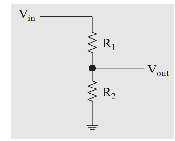
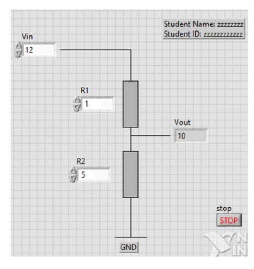
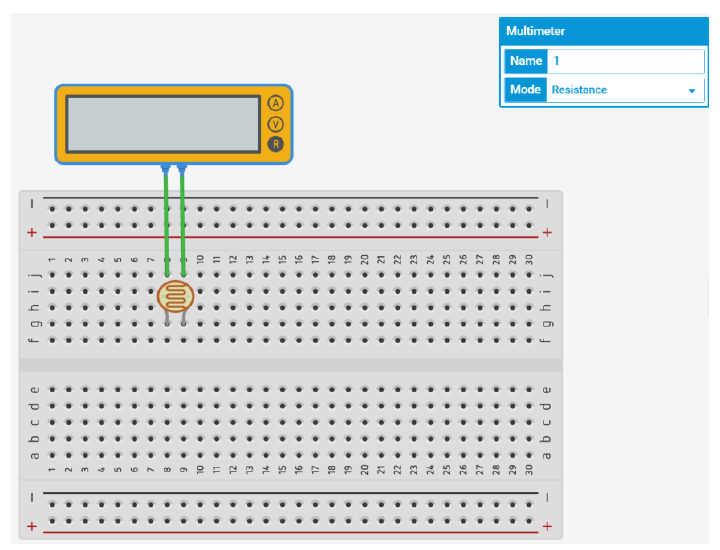
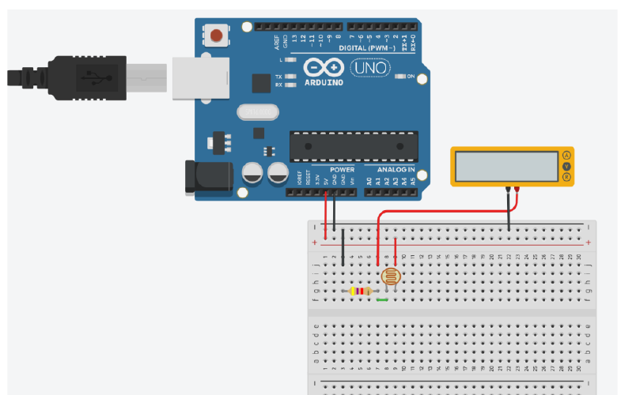
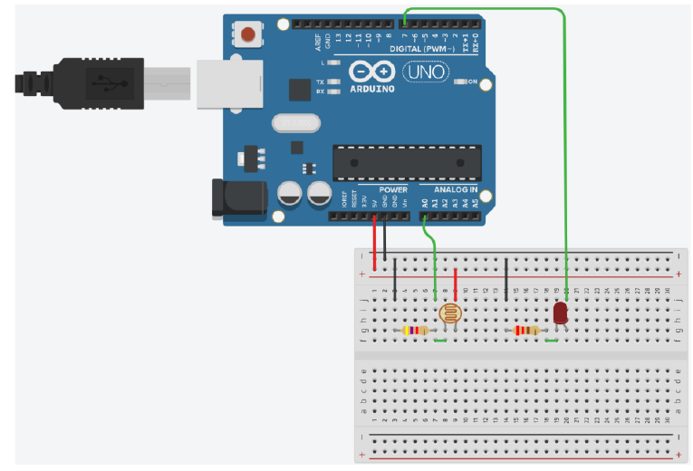

Build the same engineering idea three ways: first as a LabVIEW calculation, then as a simulated sensor circuit, and finally as a real photoresistor system that turns an LED on in low light.
This redesigned lab combines the original LabVIEW introduction with the sensor-and-Arduino sequence. The stages follow a repeated reasoning cycle so that the instructions do not become a list of clicks without understanding.
PredictCommit to what you expect.
BuildCreate the VI, simulation, or circuit.
ObserveCollect a value or visible result.
ExplainConnect evidence to the concept.
VerifyTest, compare, and troubleshoot.
Intended learning outcomes
ILO 1Recognize the front panel, block diagram, controls, indicators, VIs, and SubVIs in LabVIEW.
ILO 2Distinguish common LabVIEW data types, arrays, clusters, while loops, for loops, and shift registers.
ILO 3Create a LabVIEW VI that continuously calculates voltage-divider output.
ILO 4Measure how photoresistor resistance changes with light.
ILO 5Use a voltage divider to convert resistance variation into voltage variation.
ILO 6Connect an Arduino analog input and digital LED output correctly.
ILO 7Write and explain threshold-based Arduino code for automatic lighting.
ILO 8Compare calculated and measured values and identify plausible sources of disagreement.
Your checkboxes, tables, predictions, and reflections are stored only in this browser using local storage. They are not submitted to Avenue or sent to a server. Use the print button at the end if you need a copy.
Stage 2 of 7 · ILO 1–2
Learn the LabVIEW language before copying a diagram
Watch sections 1–4
As you watch the LinkedIn Learning course, pause after each section and answer the questions below. The goal is not to memorize interface names; it is to understand what role each object plays.
Concept map
Front panel and block diagram
The front panel is the user interface. The block diagram contains dataflow logic and structures.
A while loop repeats until a condition is met. A for loop repeats a known number of times. A shift register carries a value from one loop iteration to the next.
Imagine calculating Vout for five different R2 values. Which concepts would you combine? A strong answer should mention an array, a for loop, and an output array or graph. This is not an extra deliverable; it checks whether the course concepts transfer beyond the screenshot.
Stage 3 of 7 · ILO 3
Build a voltage-divider VI
Deliverable: .vi file
Create a VI that calculates Vout from Vin, R1, and R2. Your front panel must include your student name and ID.

Reference circuit: Vout is measured across R2.
Vout = Vin × R2 ÷ (R1 + R2)
Predict before calculating
Test the equation before opening LabVIEW
Expected Vout:10.000 V
Build checklist

Example layout. Recreate the function, not merely the appearance.
Test a boundary case
What should your VI do if R1 + R2 = 0? The original exercise does not specify error handling. At minimum, recognize that division by zero is invalid. A robust VI would prevent or clearly report the condition.
Stage 4 of 7 · ILO 4
Observe how light changes resistance
Tinkercad Exercise 1
Join the Tinkercad class, choose Join with Nickname, and use your McMaster ID without “@mcmaster.ca”. Create a new Circuit.
Predict

Measure the component directly in resistance mode.
Build and measure
Place the photoresistor so its left leg is in G8 and right leg is in G9.
Connect the multimeter terminals to J8 and J9.
Set the multimeter to Resistance.
Start the simulation and record the resistance at each light level.
Real-meter safety principle: resistance is normally measured on an unpowered circuit. Tinkercad protects you from many mistakes that a physical meter will not.
Table 1 · Photoresistor resistance
Light level
0%
25%
50%
75%
100%
PR resistance (kΩ)
Explain the pattern
Stage 5 of 7 · ILO 5
Use a voltage divider as a sensor interface
Tinkercad Exercise 2
The Arduino cannot measure resistance directly at A0. The voltage divider converts the photoresistor’s resistance change into a voltage that the analog input can read.

The photoresistor is the upper resistance; the 4.7 kΩ resistor is connected from the output node to ground.
Predict from the circuit orientation
In this circuit, the 4.7 kΩ resistor is R2. If brighter light makes the photoresistor resistance smaller, what should happen to Vout?
Text-only wiring map
Connection
From
To
Purpose
Fixed resistor
G3
G7
4.7 kΩ lower leg of divider
Ground connection
J3
Negative rail
Connects R2 to ground
Positive connection
J9
Positive rail
Connects photoresistor to 5 V
Power rails
Arduino GND and 5 V
Negative and positive rails
Powers the divider
Voltage measurement
Black lead: negative rail
Red lead: J7
Measures Vout relative to ground
Table 2 · Simulated sensor voltage
Light level
0%
25%
50%
75%
100%
Voltage (V)
Observe, explain, verify
ObserveWhich light interval produced the largest voltage change?
ExplainIs the sensor response linear across all five points?
VerifyUse one resistance value from Table 1 to estimate Vout.
TroubleshootIf the meter reads 0 V at every light level, what three connections would you inspect first?
Stage 6 of 7 · ILO 6–7
Turn a sensor reading into an LED decision
Tinkercad Exercises 3–4
Connect the voltage-divider output to A0, add an LED to digital pin 7, and use a threshold to decide whether the LED should be HIGH or LOW.

Sensor input at A0; LED output at D7 through a 220 Ω resistor.
Text-only wiring map
Delete the multimeter.
Connect J7 to Arduino A0.
Place the LED at G19 and G20.
Place a 220 Ω resistor from G14 to G18.
Connect F18 to F19.
Connect J14 to GND.
Connect J20 to digital pin 7.
Check LED polarity. The current-limiting resistor protects the LED; reversing the LED may prevent it from lighting.
Arduino C++ sketch
int PRPin = 0;
int PR = 0;
int LEDPin = 7;
int lowLightLim = 400;
void setup()
{
pinMode(LEDPin, OUTPUT);
}
void loop()
{
PR = analogRead(PRPin);
if (PR < lowLightLim) {
digitalWrite(LEDPin, HIGH);
}
else {
digitalWrite(LEDPin, LOW);
}
}
Read the code as an argument
Claim: pin 7 will control an output.
Evidence: A0 is sampled with analogRead().
Rule: if the value is below 400, write HIGH; otherwise write LOW.
Repetition:loop() repeats the sensing and decision continuously.
Move the sensor reading and threshold. Then explain why the LED state changes.
Simulated LED:ON (HIGH)
Verify and troubleshoot
Run the simulation. Change the light level around the switching point. If the LED does not respond, inspect in this order: sensor value in the code, A0 connection, common ground, LED polarity, 220 Ω resistor path, pin 7 connection, and the comparison operator.
Stage 7 of 7 · ILO 8
Build the real circuit, compare evidence, and submit
Trainer board Exercise 5
Use the trainer board’s internal 5 V supply, a photoresistor, a 4.7 kΩ resistor, and a multimeter. This stage tests whether the simulated model survives contact with real components and measurements.
Equipment
Bench sequence
Turn power off before changing wiring.
Measure resistance only with circuit power removed.
For voltage measurement, restore the 5 V supply and place the meter in parallel with Vout.
Confirm a common ground before interpreting a voltage reading.
Table 3 · Total series resistance
Cover the sensor for dark, use ambient room light for normal, and use a phone flashlight for the bright condition. Record total resistance in kΩ.
Condition
Dark
Normal
Flashlight
Total resistance (kΩ)
For the shown orientation, calculated Vout = 5 V × 4.7 kΩ ÷ total resistance.
Table 4 · Calculated and measured sensor voltage
Condition
Dark
Normal
Flashlight
Calculated voltage (V)
Measured voltage (V)
Percent difference
—
—
—
Make sense of disagreement
Component toleranceThe “4.7 kΩ” resistor may not be exactly 4.700 kΩ.
Light variabilityAmbient light and flashlight distance are not perfectly controlled.
Measurement setupLead placement, contact resistance, or an incorrect meter mode can alter the result.